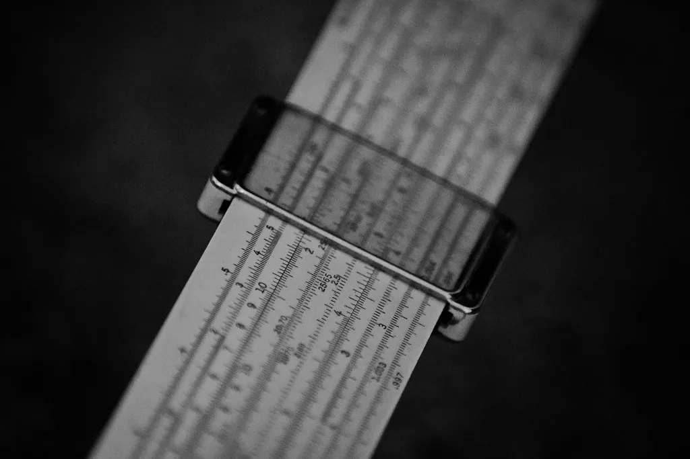

Windows 11 Basics
Everything else on your computer stands on a few simple skills: opening the Start menu, finding your files, changing a setting, and keeping things up to date. Let's learn them calmly, one at a time.

Kindly Keystrokes is an independent educational website and is not affiliated with, endorsed by, or sponsored by any company mentioned.
The desktop: your computer's home
When your computer finishes starting up, the screen you land on is called the desktop. Think of it as the top of your actual desk: a clear surface with a few tools laid out, ready for work. Across the very bottom is a strip called the taskbar. In the middle or left of that strip is a button with the Windows logo (four small squares). That button is the Start menu, and it is where nearly everything begins.
You do not need to memorize the whole screen today. For now, just notice three things: the wide empty desktop, the taskbar along the bottom, and the Start button. Everything else we will meet one piece at a time.
Opening the Start menu
The Start menu is a list of your programs and settings. Opening it is the first real skill, and it is an easy one.
What you'll need
- A computer running Windows 11
- A mouse or a touchpad
- A few quiet minutes
- Move the pointer to the Windows logo at the bottom of the screen.
- Click it once with the left mouse button. A panel will slide up from the bottom.
- Look at the panel: the top row shows pinned programs, and there is a search box across the top.
- To close the menu without choosing anything, click once on the empty desktop.
Tip: If you prefer the keyboard, tapping the key with the Windows logo on it does exactly the same thing as clicking the Start button. Many people find that easier than aiming the mouse.
Try it now: open and close the Start menu
- Click the Windows button to open the menu.
- Read the names of a few programs you see there.
- Click an empty part of the desktop to close it again.
- Do it three times, until it feels ordinary.
Opening a program
A program (sometimes called an app, short for application) is a tool that does one kind of job: writing, browsing the web, looking at photos. Opening one is simple.
- Open the Start menu.
- If you can see the program you want, click its name or picture once.
- If you cannot see it, start typing its name in the search box at the top — for example, type the word Weather.
- When its name appears in the results, click it once. The program opens in its own window.
A window is just a framed box on the screen that holds one program. You can have several open at once, like several papers spread on a desk. In the top-right corner of every window are three small buttons: a dash that tucks the window out of the way, a square that makes it fill the screen, and an X that closes it.
Files and folders
Everything you save — a letter, a photo, a bank statement — is kept as a file. Files are grouped into folders, exactly like paper documents in a filing cabinet. Windows gives you ready-made folders with sensible names: Documents, Pictures, Downloads.
- On the taskbar, look for a small yellow folder icon. This is File Explorer.
- Click it once. A window opens showing your folders down the left side.
- Click Documents to see what is inside it.
- Double-click any file to open it; click the X to close it when you are done.
Tip: A single click selects something; a double click opens it. If a double click feels too fast, you can slow it down later in Settings — we will not worry about that today.
Changing a setting
Settings is the control room of your computer. It is where you make the screen brighter, the text bigger, or the sound louder. You do not need to understand all of it — just how to get there and back.
- Open the Start menu.
- Click the gear-shaped icon labelled Settings, or type Settings in the search box and click it.
- Down the left side you will see groups such as System, Bluetooth & devices, and Accessibility.
- Click Accessibility, then Text size, and drag the slider to make all your menus larger.
- Close the window with the X when you are happy. Your change is saved automatically.
Tip: Nothing in Settings is permanent. If a change does not suit you, go back to the same spot and move it the other way. You cannot break your computer by looking around in Settings.
Keeping Windows up to date
From time to time Microsoft improves Windows and fixes problems. These improvements arrive as updates. Installing them is one of the most important things you can do for your safety, and your computer mostly does it for you.
- Open Settings.
- Click Windows Update near the bottom of the left-hand list.
- Click Check for updates.
- If updates are found, let them install. You may be asked to restart — choose a time when you are not in the middle of something.
An update sometimes asks to restart the computer. That is normal and healthy. Save anything you are working on first, then allow the restart. The machine will shut down and start again on its own.
Restart or shut down
There are two gentle ways to finish for the day, and it helps to know the difference. A restart turns the computer off and straight back on, which quietly clears up many small glitches. A shut down turns it fully off until you press the power button again.
- Open the Start menu.
- Click the power icon (a circle with a line at the top).
- Choose Restart to refresh the computer, or Shut down to switch it off completely.
Tip: If your computer is behaving oddly, a restart is the first thing to try. It is the computer equivalent of a good night's sleep, and it solves more problems than anything else.
The mouse and the keyboard, without fear
Two tools do almost everything on a computer: the mouse (or the flat touchpad on a laptop) and the keyboard. A little practice with each pays off everywhere.
The mouse has two buttons. The left button is the one you use nearly all the time — a single click to choose something, a double click to open it. The right button opens a small menu of extra choices and is worth knowing but not worth worrying about yet. Between or beside the buttons is a little wheel you can roll with your finger to scroll a page up and down.
- Rest your hand on the mouse without gripping it; let it glide.
- Move the pointer to an item and press the left button once to select it.
- Press twice quickly — a double click — to open it.
- Roll the wheel toward you to move down a page, and away from you to move up.
On the keyboard, a few keys earn their keep. The Enter key confirms a choice or starts a new line. The long space bar adds a space between words. Backspace rubs out the character to the left of the cursor, like an eraser. And the Shift key, held down while you press a letter, makes that letter a capital.
Tip: If the pointer ever feels too fast or too slow, you can adjust it later in Settings under “Bluetooth & devices,” then “Mouse.” There is no need to put up with a pointer that races away from you.
The taskbar and pinning your favorites
The taskbar along the bottom of the screen is more than a resting place for the Start button. It shows which programs are open, and it can hold shortcuts to the ones you use most, so they are always a single click away.
- Open a program you like, such as your web browser.
- While it is open, move the pointer to its icon on the taskbar and press the right mouse button.
- In the small menu that appears, click Pin to taskbar.
- Now that program stays on the taskbar even after you close it — click it any time to open it again.
You can pin several favorites this way and arrange your most-used tools in a tidy row. To remove one later, right-click it and choose Unpin from taskbar. Nothing is lost; you are only tidying the shortcuts.
Where to go next
That is the whole ground floor: the desktop, the Start menu, opening programs, finding your files, changing a setting, and keeping things updated. Practice these until they feel ordinary, because every other lesson stands on them. When you are ready, the next natural step is email, so you can write to the people you care about. Head to Setting Up Email when you feel like it — there is no hurry at all.